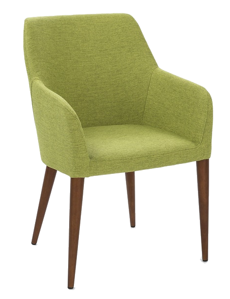

Reason For The Seasion
Welcome to the online bio of Justin Fredericks. This site’s content will highlight current and future college education, degree details, hobbies and much more.  On the important side of information this will highlight some methods learned and used to construct this web site. Threw out this construction this semesters teachings have all been falling into place. Note pad++ to Atom, simple html to flavorful styling with style sheets